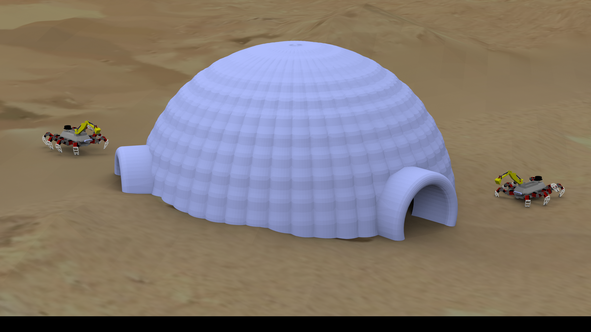

Case Study
EDISON AI Assistant
What if you could run a GPT-4-class AI on your own hardware—100 % offline, zero API costs, and fully private?
TL;DR
- Role
- Solo Creator — architecture, backend, frontend, deployment
- Team
- Solo (personal project)
- Duration
- Ongoing (v1.3.0 production-ready, Jan 2026)
- Tools
- Python, FastAPI, llama-cpp-python, CUDA, Qdrant, ComfyUI, Qwen 2.5, LLaVA, HTML/CSS/JS
- Outcome
- Production-ready offline AI platform with multi-GPU inference, RAG memory, voice, image generation, and an OpenAI-compatible API
Problem
Cloud AI services like ChatGPT and Claude are powerful, but they come with structural trade-offs: recurring subscription costs ($20–200/month), mandatory internet connectivity, and the unavoidable reality that every prompt you send lives on someone else's server. For creative professionals, researchers, and anyone handling sensitive data, those trade-offs can be deal-breakers.
I wanted a system that matched the capability of cloud AI—multi-modal understanding, long-term memory, image generation, code assistance—but ran entirely on local hardware with zero data leaving the machine. Not a toy demo; a production-grade platform I actually use every day.
Constraints
Fully offline: No internet dependency at inference time. All models, vector databases, and web UI must run on the local network. This rules out any cloud-hosted embedding service, model API, or telemetry.
Consumer-grade hardware: The system targets a multi-GPU desktop (not a datacenter). Memory, VRAM, and power draw all matter. Model selection had to balance quality against what actually fits.
Production reliability: EDISON isn't a notebook experiment—it runs as systemd services that auto-start on boot, survive crashes, and log cleanly. Uptime matters because I rely on it daily.
Extensibility: The architecture had to support new models, new tools, and new UI modes without rewriting core services. A plugin-style node system (ComfyUI) and a clean REST API were non-negotiable.
My Role
I designed and built every layer of this system solo: the 4-service microservice architecture, the FastAPI backend for LLM inference and RAG, the Coral TPU intent classifier, the ComfyUI custom nodes, the web UI with voice and agent live-view, the systemd deployment pipeline, and the documentation. From the YAML config schema to the CSS animations on the voice orb—it's all mine.
Approach
EDISON is a 4-service architecture, each running as an independent systemd unit:
- edison-core (port 8811) — The brain. FastAPI service running Qwen 2.5 14B (fast mode) and 72B (deep mode) via llama-cpp-python with CUDA tensor splitting across multiple GPUs. Also hosts the RAG pipeline (Qdrant vector DB), the agent/tool system, and the work-mode orchestrator.
- edison-coral (port 8808) — Intent classification microservice. Uses heuristic pattern matching (40+ keyword patterns across 5 categories) with an optional Coral Edge TPU path for hardware-accelerated classification. Routes every user message to the optimal mode automatically.
- edison-web (port 8080) — Modern web UI served via FastAPI. Chat interface with multiple modes (Auto, Chat, Deep, Code, Agent, Work, Swarm), file upload with RAG ingestion, voice assistant with Web Speech API, and real-time agent live-view via SSE/WebSocket.
- ComfyUI (port 8188) — Node-based image generation. I wrote custom EDISON nodes (EdisonChatNode, EdisonHealthCheck) so the AI can be invoked directly inside visual workflows.
The key design decision was making every service communicate over REST with a shared OpenAI-compatible /v1/chat/completions endpoint. This means any tool that speaks the OpenAI API—VS Code extensions, CLI scripts, third-party apps—can use EDISON as a drop-in replacement without code changes.
Key Decisions
Qwen 2.5 over LLaMA: At the time of model selection, Qwen 2.5 offered the best quality-per-VRAM ratio at both the 14B and 72B parameter points. The 14B model handles casual chat in under 1 second; the 72B model matches GPT-4-class reasoning. Running both simultaneously with tensor splitting lets EDISON route simple queries to the fast model and complex ones to the deep model—no round-trip to the cloud required.
Qdrant for RAG over SQLite: Vector similarity search is the backbone of EDISON's memory system. Qdrant runs as a lightweight local process, supports filtering, and handles the auto-remember pipeline where the system extracts and stores facts from every conversation without the user toggling a checkbox. SQLite could store text, but it can't do semantic recall ("what did we discuss about neural networks last week?").
Heuristic intent detection (V1) with TPU upgrade path: Rather than training a classifier from day one, I shipped a 40+ keyword pattern matcher that achieves >90% routing accuracy for my usage patterns. The architecture cleanly supports swapping in an Edge TPU TFLite model for V2 without touching the API contract—a pragmatic ship-now, optimize-later decision.
systemd over Docker: For a single-machine deployment that needs GPU passthrough and low-overhead process management, systemd services are simpler and more reliable than Docker containers. Each service has its own unit file with restart policies, logging, and dependency ordering.
Iterations
v1.0 — Core chat + ComfyUI nodes: Stood up edison-core with a single Qwen 14B model and the ComfyUI custom node. Validated the end-to-end flow: user types in ComfyUI → node calls REST API → LLM responds → text appears in ComfyUI output. Shipped the web UI as a basic chat window.
v1.1 — Memory + intent + work mode: Added the Qdrant RAG pipeline, auto-remember (fact extraction without manual toggles), conversation context awareness (pronoun resolution across turns), enhanced intent detection (40+ patterns), and the work mode that breaks complex tasks into 3–7 actionable steps with visual progress tracking.
v1.2 — Voice + agent live view: Integrated Web Speech API for STT/TTS with a hue-reactive voice orb animation. Added the agent mode with real-time SSE/WebSocket streaming of agent steps, search results, and file diffs. Built the swarm mode for parallel specialized agents.
v1.3 — OpenAI compatibility + polish: Implemented the /v1/chat/completions endpoint with model mapping (gpt-3.5-turbo → fast, gpt-4 → deep), dynamic chat naming, chat history search, and production hardening. Current release: v1.3.0, production-ready.
Outcome
EDISON is a fully functional, production-grade AI platform that I use every day for writing, coding, research, and image generation—all without an internet connection. Compared to cloud AI:
- Cost: $0/month ongoing (one-time hardware investment)
- Privacy: 100% offline—no data leaves the machine
- Latency: <1s for fast-mode responses (local inference)
- Capability: Text, vision (LLaVA), image generation (ComfyUI/FLUX), code, agent tools, RAG memory, voice—matching or exceeding the feature set of $20/month subscriptions
The OpenAI-compatible API means EDISON integrates with any tool that supports the OpenAI SDK, making it a true drop-in replacement for cloud services across my entire workflow.
Next Steps
The roadmap includes conversation summarization for very long chats, user-preference learning over time, multi-step work mode with persistent checkpoints, and integration with external task-management tools. I'm also exploring upgrading the intent classifier from heuristic patterns to a fine-tuned Edge TPU model for even faster and more accurate routing.
Project Gallery


